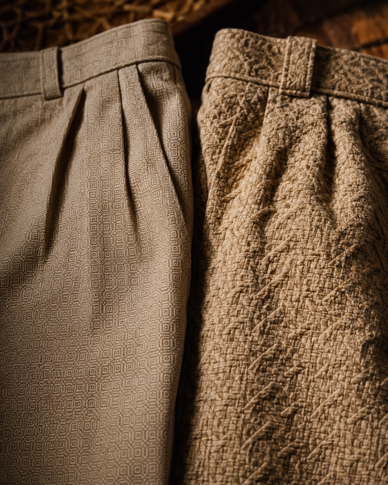
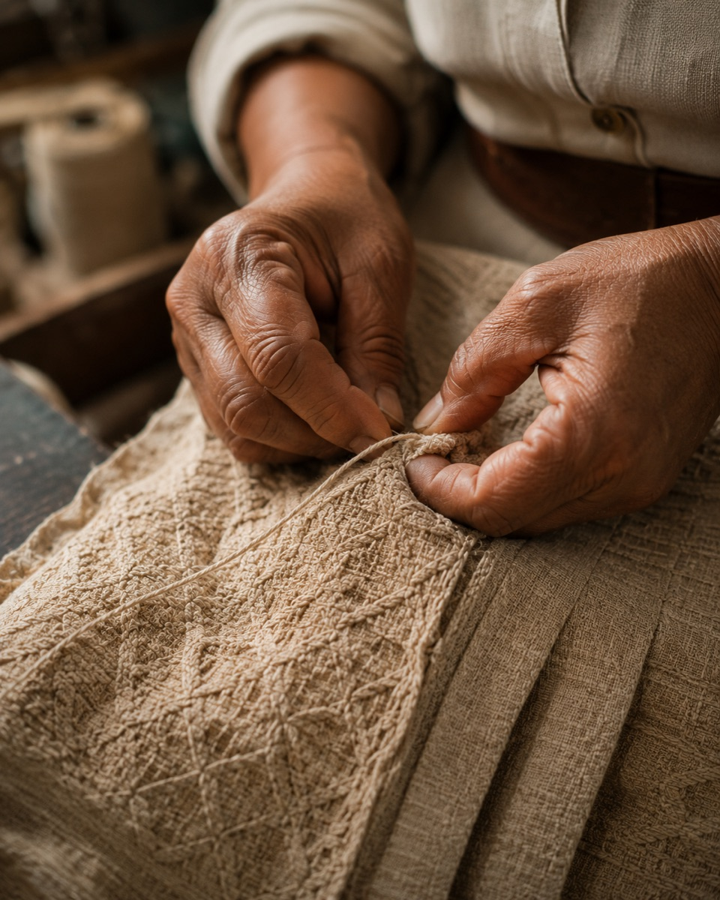

Fábrica em Ciríaco/RS · 15 anos de pilcha artesanal
Para mulheres pilcheiras que não aceitam cópia industrial. Prazo de 35 dias, fábrica direta, atendimento da Loreni.
Não é vitrine de loja. Não é revenda de atacado. É a fábrica — a costureira-chefe trança cada favo à mão, o caimento é diferente, e a Loreni te atende pelo WhatsApp.

Favo trançado à mão · à esq. industrial estampadoO problema não é você. É a bombacha.
A maioria das bombachas vendidas no Brasil hoje é produção industrial — o favo é estampado, não trançado. O caimento fica diferente. Quem entende de pilcha, percebe.
E você percebe também.
Parece igual na foto. Na hora de usar, a diferença aparece. O favo estampado é impresso no tecido — o artesanal é trançado à mão, ponto por ponto. Caimento e textura diferentes.
Você pediu 'entre 30 e 40 dias'. A Semana Farroupilha não espera. Sem confirmação de data por escrito, você assume o risco.
A vendedora da loja não sabe o que é favo trançado. Não sabe quem fez. Não sabe o prazo real de reposição. Você compra no escuro.
A diferença artesanal
Cada ponto do favo é trançado manualmente. 4 a 6 horas de acabamento por peça. Não tem máquina que reproduza.
A Bombachas Farroupilha produz em Ciríaco/RS há 15 anos. Nossa Bombacha de Favo é o produto-carro-chefe: a costureira-chefe faz o trançado à mão — não é estampado, não é industrial. Por isso o caimento é diferente. Por isso a tribo reconhece.
O preço começa em R$ 280 porque o trabalho manual é real. Se você quer entender por quê, a Loreni te manda um vídeo de 30 segundos do processo.

4 a 6 horas de trabalho manual por peçaA costureira-chefe faz cada favo manualmente. 4-6 horas de trabalho artesanal por peça — o que o industrial não reproduz.
Você fala com quem produz. A Loreni atende no WhatsApp e sabe o status de cada pedido.
35 dias de produção artesanal. Confirmamos a data de entrega no WhatsApp — sem 'estimativas'.
Correios (PAC e SEDEX) com rastreamento. De Ciríaco/RS para onde você estiver.
Você vê o processo antes de comprar. Vídeo do trançado, nome da costureira-chefe, fábrica identificada.
Simples, direto e com confirmação de prazo.
WhatsApp direto — sem formulário, sem chatbot. Conta o que você quer: modelo, tamanho, para qual evento. A Loreni responde em até 4h em dias úteis.
A Loreni confirma a data de entrega por escrito. Se você precisar para a Semana Farroupilha, ela calcula se o prazo de 35 dias fecha. Sem surpresa.
Durante a produção, a Loreni manda atualização no WhatsApp. Quando o pedido estiver pronto, você recebe o código de rastreamento dos Correios.
Atacado
Pedido mínimo 15 peças · Prazo 35 dias · Atendimento direto com a Loreni
Se você tem uma pilcharia ou loja de moda gaúcha regional, a Bombachas Farroupilha atende atacado. Pedido mínimo de 15 peças, prazo de 35 dias por escrito, sem necessidade de pedido de 200 peças que amarra capital de giro.
Linha Bombacha de Favo artesanal (a partir de R$ 180/peça) e linha Popular Tradicional (a partir de R$ 70/peça).
Avaliações
Clientes B2C e lojistas que confiam na Tapparo há anos.
“Comprei a Bombacha de Favo para a Semana Farroupilha. A Loreni confirmou a data no WhatsApp e chegou 3 dias antes. Quem entende de pilcha no evento perguntou onde eu tinha arrumado.”
“Já comprei 3 peças da Tapparo. A diferença do favo artesanal para o industrial é visível. Nunca mais compro bombacha de favo em loja.”
“Trabalho com a Tapparo há 2 anos. Pedido mínimo de 15 peças e prazo de 35 dias por escrito. Nunca atrasou. A Loreni resolve tudo diretamente.”
Dúvidas frequentes
O prazo padrão é de 35 dias corridos após confirmação do pedido. A Loreni confirma a data específica de entrega no WhatsApp no momento do pedido. Para eventos com data fixa (ex: Semana Farroupilha, 20 de setembro), informe no primeiro contato para que o prazo seja calculado.
Sim — a diferença é no processo. A Bombacha de Favo da Bombachas Farroupilha tem o miolo de favo trançado à mão pela costureira-chefe. Isso leva 4 a 6 horas por peça. A maioria das bombachas de shopping tem favo estampado (impresso no tecido) — parece parecido na foto, mas o caimento e a textura são diferentes. A Loreni pode te mandar um vídeo de 30s do processo para ver a diferença.
É uma pergunta justa. O preço reflete o trabalho artesanal real: cada Bombacha de Favo leva 4 a 6 horas de acabamento manual da costureira-chefe. Não tem como fazer isso em larga escala industrial. Se você comparar com bombacha popular de loja (que custa R$ 80-100), o produto é diferente — processo, caimento e durabilidade. Se você quer ver o processo antes de decidir, a Loreni manda o vídeo. Temos também a linha Popular Tradicional a partir de R$ 90.
Sim, enviamos para todo o Brasil pelos Correios (PAC e SEDEX). O prazo de envio é calculado sobre o prazo de produção de 35 dias — você recebe o código de rastreamento no WhatsApp assim que o pedido for postado. Para calcular o prazo total (produção + envio) para a sua cidade, fale com a Loreni.
Direto pelo WhatsApp com a Loreni: (54) 9615-0025. Informe o modelo (Bombacha de Favo ou linha Popular), seu tamanho e se é para algum evento específico. A Loreni confirma a data de entrega e as condições de pagamento. Não tem loja física aberta ao público — somos fábrica direta em Ciríaco/RS.
Direto da fábrica
A Loreni está no WhatsApp. Fala, conta o que precisa, e ela confirma o prazo.
Você viu o processo. Sabe a diferença. Agora é só falar com quem fabrica.
35 dias de produção artesanal. Confirmação de data por escrito. Fábrica direta em Ciríaco/RS.